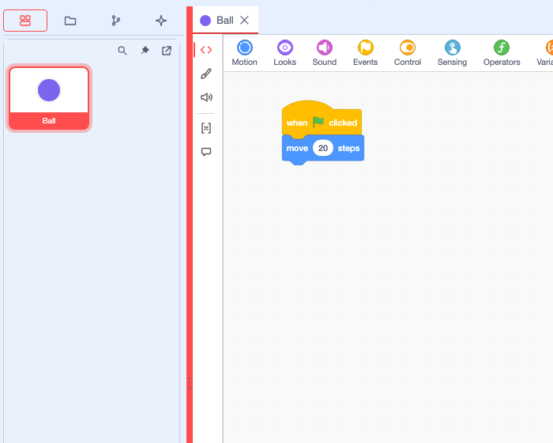
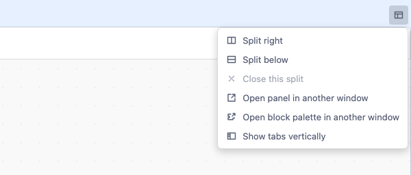
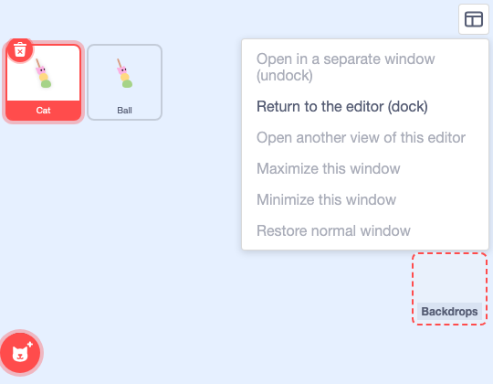

Feature guide 5/12 · Updated November 14, 2026
Split the workspace and open panels separately
Split editing panels side by side or top and bottom, or move them to separate windows, to arrange the screen the way you like to work. The layout is recorded for each project and restored the next time you open it.
5.1 Resize the work areas by dragging the dividers
Drag the three-dot grip on a divider to change the size of the areas on either side. In the Plus layout, you can adjust the width of the left drawer (the sprite list and so on). In the Scratch layout, you can adjust the width of the code area against the stage side, and the height of the stage against the sprite list.

When a divider has focus, you can also adjust it with the arrow keys. Enter returns it to its initial position. Ratios adjusted in the Scratch layout are saved in the browser. If you reopen the editor with twPlusSplitter=0 added to the URL, the dividers covered in this section are removed. Even then, you can still resize the stage itself and split editing panels. Divider grips
5.2 Split panels side by side or top and bottom
From "Editor panel layout" at the top right of an editing panel, choose "Split right" or "Split below". Splitting right opens an editor for the same sprite on the right; splitting below opens it underneath.

To move an open tab, drag it to the area where you want it and release it when the drop target changes color. A preview of the tab is shown while you drag. Dropping it on another tab row adds it to that row. Drag a divider to adjust sizes; "Close this split" closes a split panel and merges its tabs back.
Choose "Show tabs vertically" to stack the tab row down the left side of the panel. This helps when there are many tabs or when you want long sprite names to be easier to read. To return to normal, choose "Show tabs horizontally" in the same menu.
For example, you can put code on the left and the stage on the right (Show the stage in a tab). YAML documents opened by a supporting extension can also be placed as tabs. Split workspace as the default
5.3 Compare several code views side by side
Showing the same sprite's code in two panes keeps a separate scroll position and zoom level for each. You can read the setup code in one while editing the event code in the other. Block edits appear in both. To switch which pane you are editing, click that pane, or focus it and press Enter.
Shows the setup blocks
Block edits are shared
Shows the event blocks
Switch the code layout view
Right-click an empty part of the code area and, under "Change code layout view", choose "Normal layout view", "Z layout view" or "N layout view". The Z view follows the original arrangement row by row from the top, left to right; the N view follows it column by column from the left, top to bottom; both show the scripts in a single vertical column. Use them when you want to read scripts that are far apart in order. The view you are using is checked. Block coordinates do not change, and switching back to "Normal layout view" lets you edit in the original positions.
To tidy up the block coordinates themselves, choose "Edit" → "Rearrange Code Blocks". Choose an "Order" (for example "Z · by row") and a "Direction" (for example "Vertical"), and a preview of the new arrangement appears in the dialog; press "Rearrange" to apply it. The steps are also illustrated in the Ball Demo tutorial. Code layout views and rearranging · Switching from the background menu
In development In the Desktop development build for macOS, opening the same sprite in a separate OS window that shares code edits, "Undo" and "Redo" is being tested. A prototype that lets an extension's own input fields work in a separate window is being tested for supported formats only. Code panes · Separate code windows in Desktop and what is tested
5.4 Open an editing panel in a separate window
Choose "Open panel in another window" from "Editor panel layout" to open that panel in a separate browser window. With two displays, you can put code editing and asset editing on different screens. A panel in a separate window returns to its original place with "Return this panel to the editor".
How to put only the block palette in a separate window is covered in Open the block palette in a separate window.
5.5 Move the sprite list to a separate window
In the Plus layout, the sprite list is pinned in the left drawer from startup. Press "Undock sprite list" at the top of the list to move it to a separate browser window; a "Return here" button remains in the original place. You can select, add and delete sprites in the separate window too. Choose "Return to the editor (dock)" from "Window layout" at the top right of the separate window, or press "Return here" in the original place, to put it back in the left drawer. The maximize and minimize items cannot be chosen in a browser.

In development In the Desktop development build for macOS, moving the stage, sprite settings and the list to separate app windows and back has also been checked. Open the list directly in a separate window · Window layout menu · Status in Desktop
5.6 Restore the layout the next time you open a project
In the Plus layout, the order of tabs, how panes are split and sized, and which tabs were selected are recorded in the browser for each project. A project is identified by the project folder you opened, the SB3 file you opened, or, in the Desktop version, the file's location; if none of these is available, by the project name. When you reopen the project in the same browser, the layout is restored after it is matched against the loaded sprites and the documents in the project. If the record cannot be read or does not match the project's contents, the project opens in the default layout.
| What is saved | Where | What to do |
|---|---|---|
| Tab order, splits and selection | The editor's storage in the same browser profile (per project) | Open the same project in the same editor |
| Blocks, assets and confirmed documents in the project | The project's SB3 or project folder | Apply your edits and save from the File menu |
The browser keeps only the most recent layout for each project. Save the project's content in the SB3. To use the classic editing layout or document dialogs, save the project and reopen it with twPlusDockview=0. Tabs for external YAML files opened directly in the Desktop development build are not restored. Restoring the layout after a restart · Restoring the layout per project